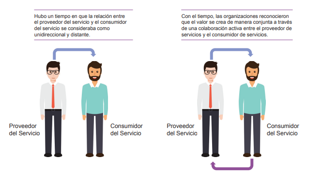
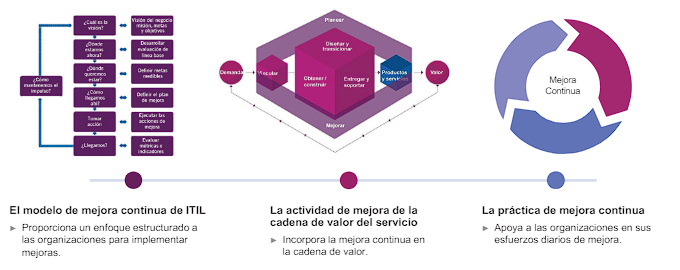
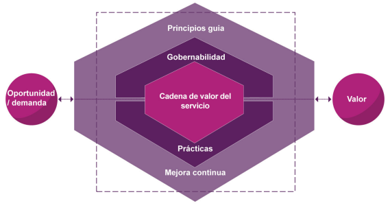

Co-creación de valor
La tecnología avanza más rápido hoy que nunca. Los desarrollos como el cloud computing, la infraestructura como servicio, machine learning y blockchain, han abierto nuevas oportunidades para la creación de valor y han llevado a que la TI se convierta en un importante impulsor de negocios y una fuente de ventaja competitiva.

Hubo un momento en que la relación entre el proveedor del servicio y el consumidor del servicio se consideraba como unidireccional y distante. Se determinaba que el proveedor del servicio entregaba el servicio y el consumidor del servicio recibía valor. El consumidor de servicios no desempeñaba ningún papel en la creación de valor para sí mismo.
Los proveedores de servicios
no deben trabajar de forma aislada para definir el valor para sus
clientes y usuarios. Deben establecer relaciones de servicios con los
consumidores para co-crear valor. Las relaciones de servicios son
mutuamente beneficiosas, las relaciones de servicios interactivas
con sus consumidores para comprender la perspectiva de valor del
consumidor.
Proposito
Hubo un tiempo en que la relación entre el proveedor del servicio y el consumidor del servicio se consideraba como unidireccional y distante
Importancia
Con el tiempo, las organizaciones reconocieron que el valor se crea de manera conjunta a través de una colaboración activa entre el proveedor de servicios y el consumidor de servicios.
| El Sistema de Valor del Servicio de ITIL (SVS) explica cómo los componentes y las actividades de la organización trabajan como un sistema para permitir la creación de valor. |
| Los principales entradas al SVS son la oportunidad y la demanda. Las oportunidades se refieren a opciones o posibilidades que pueden agregar valor para los clientes y partes interesadas, o ayudar a la organización a mejorar. La demanda se refiere a la necesidad de productos y servicios entre los consumidores. La oportunidad y la demanda generan actividades dentro del SVS de ITIL, que llevan a la creación de valor. |
|  |
Creacion de valor
| Las organizaciones facilitan la creación de valor para todos los
interesados |
| La cadena de valor del servicio es un modelo operativo que define las actividades clave requeridas para responder a la demanda y permitir la creación de valor a través de la formación y gestión de productos y servicios. |
|  |